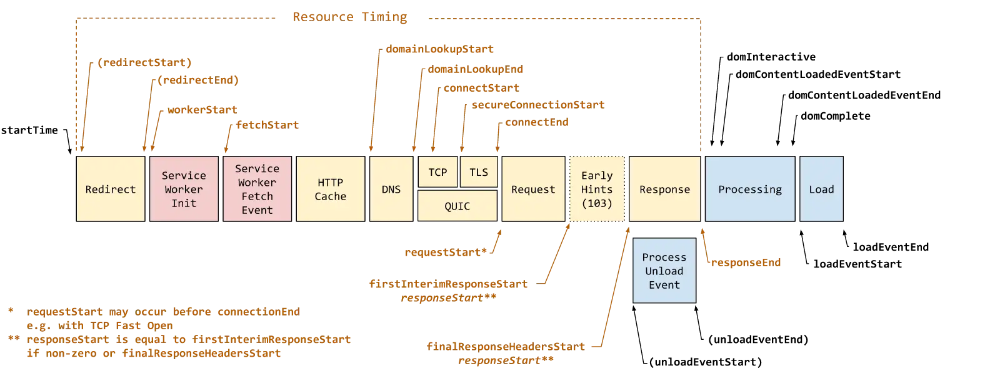

Short answer
Time to first byte is the wait from the request until the first byte of the response arrives.
The diagram lines up redirects, cache, DNS, the connection, and the server’s work before the body. A heavy hero image is not this wait. If the HTML document itself is late, later optimizations start late too. SEO Health can record that the document was late on a sample URL.
Definition
First byte is a property of the response, not of the prose. A redirect chain, a slow origin, or a document that is built only after several backend calls can all push it later. The timing diagram is a legend of stages. It is not a measurement of Mika, of a customer, or of this marketing site. Do not copy a number off a public diagram and call it this company’s result.
How the definition is used in a health pass
Say whether the late stage is a redirect, the connection, or the server building the HTML.
A CDN can shorten connection setup for static files and still leave a dynamic HTML document waiting on the origin. Caching the HTML, when the page is allowed to be cached, is a different decision from caching the logo. SEO Health should not blur those. GEO questions about whether the page answers a buyer are irrelevant until a byte of that answer can be sent.

What to check
- Redirect chains before the document
- Whether HTML is dynamic and uncached while assets are cached
- Backend calls that must finish before the first byte
- Connection setup versus origin work
- One sample URL for the late document
A practical example
A quote page redirects from http to https, then to a trailing-slash URL, then builds the price table from three services. The first byte is late before any product copy exists. The health note lists the redirect chain and the document, with one sample URL. Adding testimonials does not remove the hops.
What this does not claim
A faster first byte does not guarantee rankings or citations.
Where Mika Visibility files this
Mika Visibility files this under SEO Health, the track that asks whether the live site is technically ready to be found and understood. SEO Growth remains a separate question about coverage and intent. GEO Health and GEO Growth stay on their own scales. A calm loading or responsiveness note never becomes an automatic growth score, and there is no blended overall score.
The figure is a timing legend, so stages can be discussed without treating any bar as this site’s measurement.
FAQ
What is time to first byte?
Time to first byte is the wait from the request until the first byte of the response arrives.
What should the note distinguish?
Say whether the late stage is a redirect, the connection, or the server building the HTML.
Does a faster first byte guarantee rankings?
A faster first byte does not guarantee rankings or citations.
Next step
Run a structured SEO + GEO audit to see health findings, growth gaps, and a blueprint you can act on.
Clearer entities, answers, evidence, and context make pages easier to understand and reference. Results in any answer product are not guaranteed.